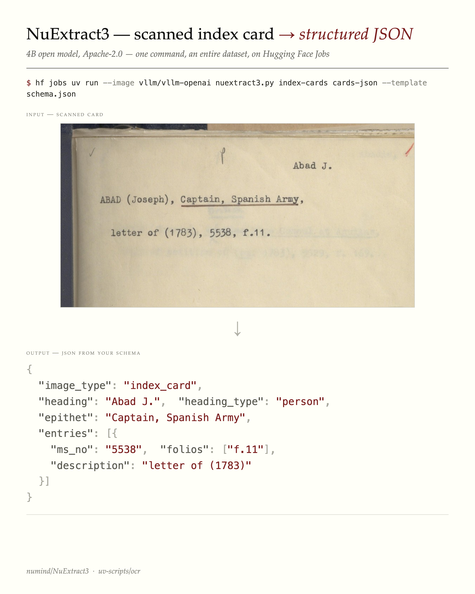
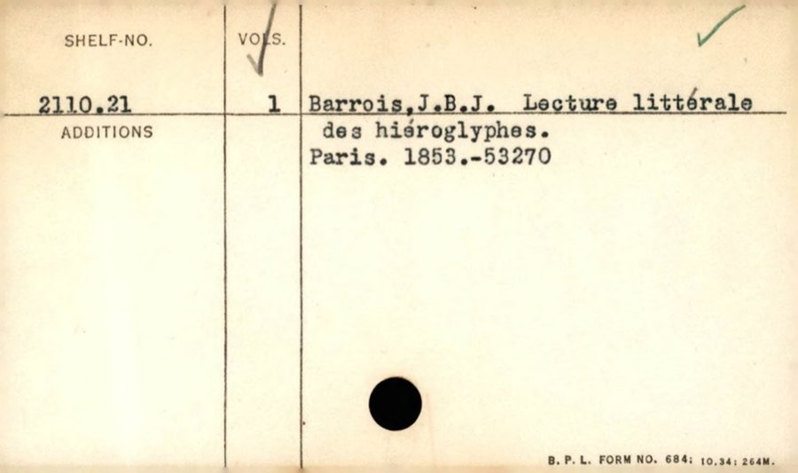

How to turn catalogue card images into structured JSON with a 4B open model
A 4B open model turns catalogue-card images into schema-shaped JSON — the kind of structured data that can be ingested back into a library system.
A while back I re-OCR’d Boston Public Library’s card catalogue: 453,000 cards, $39, turning blurry decade-old OCR into clean, searchable text. That helps fix search but it didn’t fix the thing libraries actually need.
A catalogue card isn’t really free text. It’s a structured record — a heading, a shelfmark, an author, a title, a date, an accession number laid out in a format a cataloguer designed. Libraries want that structure back, because structured fields are what can be put into their catalogue systems. Clean markdown is searchable; it isn’t ingestible.
So the question is no longer “can we read the card?” It’s “can we turn the card into a record?”
Schema in, JSON out
NuExtract3 (4B parameters, Apache-2.0) does exactly this. You hand it an image and a JSON template describing the fields you want, and it returns JSON matching that shape. No markdown to post-process — structured data directly.
Here it is on a card from the National Library of Scotland’s Advocates Library manuscript index (public dataset):

The template is the interesting part. Its leaf values declare the field types — verbatim-string (extract exactly as written), string (allow light normalisation), arrays for repeating fields, enums for fixed choices. The model fills in the shape:
{
"image_type": ["index_card", "verso", "cover", "blank", "other"],
"heading": "verbatim-string",
"heading_type": ["person", "family", "corporate", "geographic", "subject"],
"epithet": "string",
"entries": [
{"ms_no": "verbatim-string", "folios": ["verbatim-string"], "description": "string"}
]
}That schema is specific to this collection. A different card series wants a different shape — and you just write a different template. Here’s the one I used for BPL shelf-list cards:
{
"card_type": ["bibliographic", "shelf_divider", "other"],
"shelf_no": "verbatim-string",
"author": "verbatim-string",
"title": "verbatim-string",
"place_of_publication": "verbatim-string",
"date": "string",
"accession_no": "verbatim-string",
"volumes": "string",
"additions": "string"
}This matters for the ingest problem: the schema can be shaped to match what a particular catalogue expects, rather than forcing the library to adapt to the model’s output.
One command
The whole thing runs as a single command on Hugging Face Jobs — no GPU of your own, no setup — using the nuextract3.py UV script:
hf jobs uv run --flavor a100-large \
--image vllm/vllm-openai:latest \
--python /usr/bin/python3 \
-e PYTHONPATH=/usr/local/lib/python3.12/dist-packages \
-s HF_TOKEN \
https://huggingface.co/datasets/uv-scripts/ocr/raw/main/nuextract3.py \
my-cards my-records \
--template schema.jsonPoint it at a dataset of card images, hand it a schema, get a dataset of structured records back.
A live demo
I ran a sample of BPL shelf-list cards through it. The output is a browsable page — card image next to the extracted record:
→ Live demo: BPL shelf-list cards → structured records
A typical result, zero-shot:

{
"card_type": "bibliographic",
"shelf_no": "2110.21",
"author": "Barrois, J.B.J.",
"title": "Lecture littérale des hiéroglyphes.",
"place_of_publication": "Paris",
"date": "1853",
"volumes": "1",
"accession_no": "53270"
}The model also self-tags the shelf-divider cards (the printed 00–99 grids) so they can be filtered out — useful, because a real digitised collection is full of dividers, blanks and versos you don’t want to run an extractor over.
How good is zero-shot, really?
Genuinely good — with caveats worth being honest about.
On DOAB (open-access books with MARC ground truth), NuExtract3 zero-shot off a single title-page image got 100% title and 94% publisher on a 50-book sample. For comparison, general vision-language models on a similar born-digital metadata task scored roughly 77% (a 4B model) to 86% (a 35B model).
The honest footnotes: that’s not a perfectly controlled head-to-head — the comparison points come from a different corpus, the title match credits a title with-or-without its subtitle, and the model was working from one page where the older baselines saw several. So: a strong directional signal that zero-shot structured extraction is now genuinely useful, not a benchmark trophy. On harder material — handwritten or heavily annotated cards — there’s real headroom, and the BPL demo above is unreviewed.
Why this is the interesting part
Better OCR was the easy win. The harder, more valuable one is structured records: data a library can actually ingest, in a schema it controls. With a 4B open model and one command, that’s now within reach of any institution with a folder of card images — no ML team required.
The realistic path isn’t “model spits out perfect MARC.” It’s: zero-shot first pass → a curator reviews a sample → iterate the schema → and, where it pays off, a small fine-tuned model for a specific collection. Card catalogues are a problem nearly every library and archive shares, which makes them a good candidate for building something reusable rather than one-off.
Cards: Boston Public Library (public domain) and the National Library of Scotland Advocates Library (public dataset). Model: numind/NuExtract3. Script: uv-scripts/ocr.